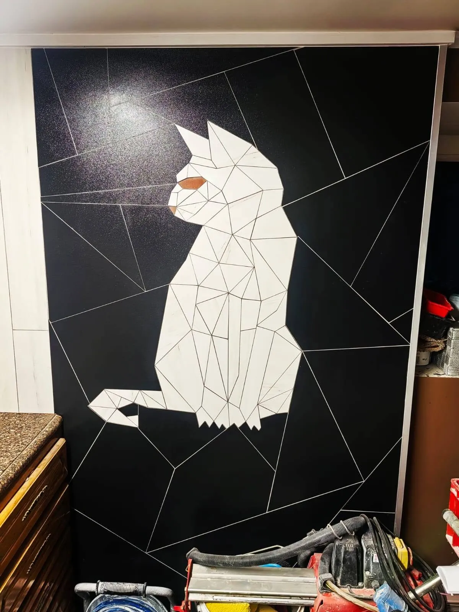
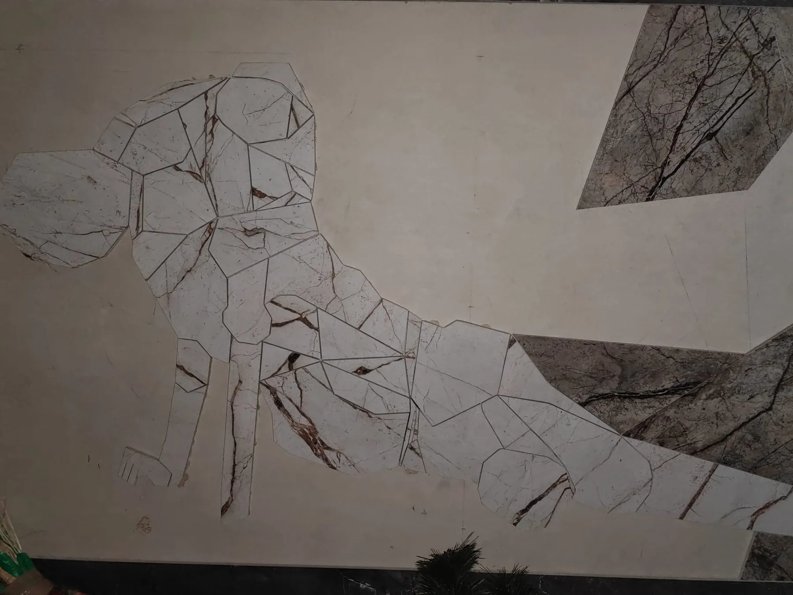

Mozaiki z płytek
Obraz, zdjęcie lub własny pomysł przenosimy na ścianę albo posadzkę. Motyw układamy z ręcznie ciętych elementów, a fuga wyznacza linie rysunku.

Jak powstaje mozaika
Mozaika z płytek to praca bliższa rzemiosłu artystycznemu niż zwykłemu płytkowaniu. Każdy element jest projektowany, cięty i dopasowywany osobno.
Projekt
Na podstawie obrazu lub zdjęcia przygotowujemy rysunek, który dzieli motyw na pola o prostych krawędziach.

Cięcie i numeracja
Każde pole przenosimy na płytkę, wycinamy i oznaczamy numerem. Ten portret składa się z ponad 70 elementów.

Montaż
Elementy układamy na ścianie lub posadzce według numeracji, pilnując równej szerokości fugi.

Efekt
Fuga staje się konturem rysunku, a mozaika stałym elementem wnętrza.
Mozaiki DK-FLIZ


Masz obraz, który chcesz przenieść na ścianę?
Wyślij zdjęcie obrazu, ulubionego zwierzaka albo szkic pomysłu. Ocenimy, jak motyw będzie wyglądał w płytkach, i zaproponujemy kolory oraz rozmiar mozaiki.
Mozaika sprawdza się na ścianie w łazience, kuchni lub salonie, a także na posadzce w holu.
Porozmawiajmy o Twojej łazience
730 230 019„Rób tak, jak dla siebie” — motto DK-FLIZ